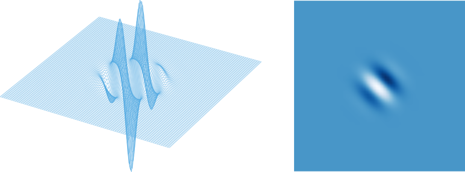

Receptive Fields
Different neurons in the visual system respond to light falling within different more-or-less well-defined areas of the retina, and have a distinguished point where the response sensitivity is greatest. This area is called the receptive field of the neuron, and the point of peak sensitivity is called the receptive field center. It is often convenient to label a neuron by the location of its receptive field center, say \( \mathbf{r}_{c} = (x_{c} , y_{c}) \), and then define its activity as a function of the receptive field center \( R (x_{c} , y_{c}) \).
Center-surround receptive fields
The response properties of visually responsive neurons are closely related to their receptive fields. The spatial shape of the receptive fields varies a lot among the visual neurons. Retinal cells commonly have center-surround receptive fields, consisting of a central disk, the "center", and a concentric ring, the "surround", each region responding oppositely to light. For example, if light in the centre increases the firing of the cell, light in the surround will decrease the firing of that cell. Depending on whether the activity increases or decreases with light in the center, the cell is said to have an on-center or off-center receptive field, respectively.

On-center and off-center cells respond oppositely to light in the center and surround of their receptive fields.
The spatial shape of center-surround receptive fields are usually described by difference of two gaussian functions, usually referred to as DoG functions, given as
\begin{equation} G(x,y) = \frac{A}{\pi a^2}e^{-(x^2+y^2)/a^2} -\frac{B}{\pi b^2}e^{-(x^2+y^2)/b^2}, \end{equation}
with the accompanying Fourier transform
\begin{equation} \widetilde{G}(k_x,k_y) = A e^{-a^2(k_x^2+k_y^2)/4} -B e^{-b^2(k_x^2+k_y^2)/4}. \end{equation}

Difference-of-Gaussians (DoG) function.
Direction & orientation selective receptive fields
Direction and orientation selective cells respond differentially to the orientation and direction of a visual stimulus. Orientation selective cells respond strongly to lines, bars, or edges of a particular orientation but not to the orthogonal orientation, while direction selective cells respond strongly to oriented lines, bars or edges moving in a preferred direction but not at all in the opposite direction. For example, a neuron may respond to a vertical line moving rightwards (preferred direction) but not moving leftwards (null direction).
The spatial profile of direction and orientation selective cells are described by Gabor functions:
\begin{equation} g(x,y;\lambda,\theta,\psi,\sigma,\gamma) = \exp\left(-\frac{x'^2+\gamma^2y'^2}{2\sigma^2}\right) \exp\left(i\left(2\pi\frac{x'}{\lambda}+\psi\right)\right), \end{equation}
where
\begin{align} x' = x \cos\theta + y \sin\theta , \\ y' = -x \sin\theta + y \cos\theta. \end{align}

Gabor function.